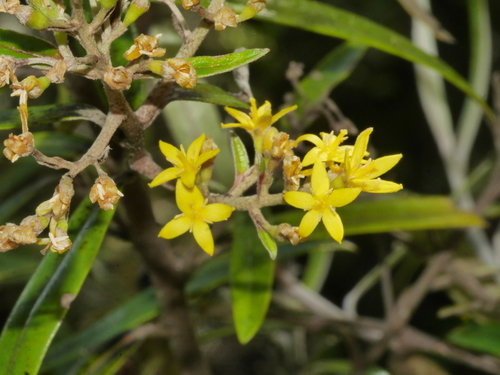

Argophyllaceae
Argophyllum / Corokia Family
Argophyllaceae is a small family of flowering plants in the order Asterales, native to the Southern Hemisphere (Australia, New Zealand, New Caledonia, and other Pacific islands). It consists of evergreen shrubs and small trees, often characterized by leaves with a dense silvery or whitish covering of hairs or scales on the underside. The family includes the genera Argophyllum and Corokia.
Overview
Argophyllaceae is a relatively small family containing just two genera, Argophyllum and Corokia, with a total of about 21-25 species. These evergreen shrubs and small trees are restricted to the Southern Hemisphere, specifically eastern Australia, New Caledonia (Argophyllum), New Zealand, Lord Howe Island, and Rapa Iti (Corokia). They typically inhabit forests, shrublands, and sometimes rocky or montane environments.
A key feature often seen in this family, particularly in Argophyllum, is a conspicuous indumentum (covering of hairs or scales) on the lower leaf surfaces, buds, and young stems, giving them a silvery, white, or yellowish appearance. Leaves are simple and alternate in Argophyllum, while often opposite or subopposite in Corokia. Flowers are small, typically 5-merous, white or yellow, and borne in clusters. The fruit differs between the genera: a capsule in Argophyllum and a drupe in Corokia.
Economically, the family is best known for Corokia species, especially Corokia cotoneaster (Wire-netting Bush), which are cultivated as ornamental shrubs in temperate regions for their interesting divaricating (intertangled) branching patterns, small leaves, yellow flowers, and colorful drupes. Argophyllum species are not widely cultivated. The family's significance is primarily botanical and ecological within its native range.
Quick Facts
- Scientific Name: Argophyllaceae
- Common Name: Argophyllum/Corokia family
- Number of Genera: 2 (Argophyllum, Corokia)
- Number of Species: Approximately 21-25
- Distribution: Southern Hemisphere: E Australia, New Zealand, New Caledonia, Lord Howe Is., Rapa Iti
- Evolutionary Group: Eudicots - Asterids - Asterales
- Current Date: March 29, 2025
Key Characteristics
Growth Form and Habit
Evergreen shrubs or small trees. Often with a dense covering of hairs (stellate, T-shaped) or scales (lepidote) on young parts and lower leaf surfaces, giving a silvery or whitish appearance.
Leaves
Leaves are simple, usually petiolate. Arrangement is typically alternate in Argophyllum, often opposite or subopposite in Corokia. Leaf margins are entire or toothed (serrated or dentate). The underside is frequently covered in dense white, silvery, or yellowish indumentum. Stipules are absent.
Inflorescence
Flowers are borne in terminal or axillary inflorescences, typically cymose, paniculate, or corymbose clusters, sometimes flowers are solitary (Corokia).
Flowers
Flowers are small, usually bisexual, actinomorphic (radially symmetrical), and typically 5-merous (sometimes 4-8 merous). Usually white, cream, or yellow.
- Calyx: Consists of (4-)5(-8) small sepals, distinct or fused at the base, persistent on the fruit.
- Corolla: Consists of (4-)5(-8) distinct petals, typically spreading, often valvate (meeting edge-to-edge without overlapping) in bud.
- Androecium: (4-)5(-8) stamens, alternating with the petals. Filaments are distinct. Anthers typically dehisce via longitudinal slits.
- Nectar Disc: An intrastaminal nectar disc is often present around the base of the ovary.
- Gynoecium: Ovary is usually inferior or half-inferior (rarely described as superior?), composed of 2-3 (rarely up to 5) fused carpels forming 2-3 (or more) locules. Placentation is axile, with typically 1 (sometimes a few) pendulous ovule(s) per locule. A single style tops the ovary, ending in a simple or slightly lobed stigma.
Fruits and Seeds
Fruit type differs between the genera: it is a loculicidal capsule in Argophyllum, splitting open to release seeds; it is a small, fleshy drupe (often yellow, orange, or red) in Corokia. The fruit is often crowned by the persistent calyx lobes.
Seeds are small, usually few per fruit or locule. Endosperm is present and fleshy or oily.
Chemical Characteristics
Plants produce iridoids, common in the Asterales order. Aluminum accumulation is known to occur in Argophyllum. The characteristic silvery/white appearance is due to the dense physical covering of hairs or scales (indumentum).
Field Identification
Identifying Argophyllaceae involves recognizing their shrubby/tree habit, distinctive leaf indumentum, flower structure, fruit type, and Southern Hemisphere distribution:
Primary Identification Features
- Habit and Location: Evergreen shrubs or small trees in Australia, New Zealand, New Caledonia, or nearby islands.
- Silvery/White Indumentum: Lower leaf surfaces (and often stems/buds) usually densely covered in hairs/scales, appearing white or silvery.
- Simple Leaves: Leaves not compound; alternate (Argophyllum) or often opposite (Corokia). Margins entire or toothed.
- Small, 5-merous Flowers (Usually): Flowers typically white or yellow with 5 distinct petals and 5 stamens alternating with them.
- Inferior/Half-Inferior Ovary: Ovary positioned below or partly below the attachment of petals and sepals (check below persistent calyx on fruit). Typically 2-3 carpels.
- Fruit Type: Either a capsule (Argophyllum) or a small drupe (Corokia), often crowned by persistent sepals.
Secondary Identification Features
- Absence of Stipules.
- Flowers in Cymes/Panicles/Corymbs.
- Intrastaminal Nectar Disc Often Present.
Seasonal Identification Tips
- Year-round: Evergreen habit, leaf arrangement (alternate vs. opposite), and especially the dense indumentum on leaf undersides are key vegetative features.
- Flowering Season: Typically spring to summer. Look for clusters of small white or yellow flowers with 5 petals and 5 stamens.
- Fruiting Season: Following flowering. Check for developing capsules or small drupes, noting the persistent calyx at the apex.
Common Confusion Points
Within their range, confusion might occur with shrubs having silvery/white undersides:
- Asteraceae: Many shrubs in the daisy family (especially in Australasia, e.g., Olearia, Brachyglottis) have leaves with white/grey tomentum underneath. Distinguished by their composite flower heads (capitula) and achene fruits (cypselas), often with a pappus.
- Goodeniaceae: Primarily Australian family, often herbs/shrubs, some with hairy leaves. Flowers are distinctly zygomorphic with a unique pollen-cup (indusium) enclosing the stigma. Fruit often a drupe or capsule.
- Lamiaceae (incl. former Chloanthaceae): Some Australian genera are shrubs with hairy leaves (often opposite). Distinguished by usually square stems, often aromatic foliage, zygomorphic flowers typically with a 2-lipped corolla, 4 or 2 stamens, superior ovary usually dividing into 4 nutlets.
- Ericaceae (Epacridoideae): Many heath-like shrubs in Australasia, but leaves usually small, often sharp-pointed, flowers typically tubular or bell-shaped, superior ovary, fruit a capsule or drupe.
- Myrtaceae: Some Australian shrubs (Leptospermum etc.) have small leaves, sometimes hairy. Distinguished by typically having numerous stamens, often an inferior ovary embedded in a hypanthium, and fruit usually a woody capsule or berry.
Key distinguishing features for Argophyllaceae are the combination of silvery/white leaf indumentum, small 5-merous flowers with distinct petals and 5 stamens, inferior/half-inferior ovary, and fruit being either a capsule or drupe, along with leaf arrangement (alternate vs. opposite) distinguishing the two genera.
Field Guide Quick Reference
Look For:
- Shrub/small tree (Aus, NZ, NC, etc.)
- Simple leaves, alt. (Argophyllum) or opp. (Corokia)
- Dense silvery/white hairs/scales under leaves
- No stipules
- Small white/yellow flowers, 5-merous (usually)
- 5 distinct petals, 5 stamens
- Ovary inferior or half-inferior
- Fruit: Capsule (Argophyllum) or Drupe (Corokia)
Key Variations (between genera):
- Leaf arrangement: Alternate vs. Opposite
- Fruit type: Capsule vs. Drupe
- Habit nuances (e.g., divaricating branches in Corokia)
Notable Examples
The family comprises two main genera with distinct characteristics:

Argophyllum sp.
(Genus Argophyllum)
This genus contains shrubs and small trees found in eastern Australia and New Caledonia. They are characterized by alternate leaves, typically with strikingly white or silvery undersides due to dense hairs. Flowers are small, white or cream, borne in panicles or corymbs. The fruit is a small capsule.

Corokia cotoneaster
Wire-netting Bush
Native to New Zealand, this species represents the genus Corokia. It's a distinctive shrub known for its densely interlaced, divaricating branches forming a "wire-netting" appearance. Leaves are small, often opposite or clustered, with whitish undersides. Produces small, star-shaped yellow flowers followed by bright red or yellow drupes. Popular ornamental.

Corokia virgata
(A Corokia species)
Another species from New Zealand, similar to C. cotoneaster but often less extremely divaricating, with slightly larger leaves. Also cultivated ornamentally for its form, foliage, small yellow flowers, and colorful drupes (typically orange or red).
Phylogeny and Classification
Argophyllaceae is placed within the large asterid order Asterales. This order includes the massive Asteraceae (sunflower family) and Campanulaceae (bellflower family) as its core members, but also encompasses several smaller families representing earlier diverging lineages.
Molecular phylogenetic studies consistently place Argophyllaceae in a basal position within Asterales, forming a clade with Phellinaceae (a small family endemic to New Caledonia) and often Alseuosmiaceae (from NZ, Aus, NC, NG). Argophyllaceae itself is strongly supported as sister to Phellinaceae. This entire clade (Argophyllaceae + Phellinaceae + Alseuosmiaceae) represents one of the earliest branches in the Asterales evolutionary tree, diverging before the main radiation that led to families like Campanulaceae, Asteraceae, Goodeniaceae, and Menyanthaceae.
Position in Plant Phylogeny
- Kingdom: Plantae
- Clade: Angiosperms (Flowering plants)
- Clade: Eudicots
- Clade: Asterids
- Order: Asterales
- Family: Argophyllaceae
Evolutionary Significance
Argophyllaceae contributes to understanding Asterales evolution and Southern Hemisphere biogeography:
- Basal Asterales Lineage: Its position near the base of the Asterales order helps illuminate the early evolutionary steps and ancestral characteristics of this major asterid radiation.
- Sister Relationship with Phellinaceae: The close link between Argophyllaceae (Aus/NZ/NC) and Phellinaceae (NC only) provides specific insights into diversification patterns within the New Caledonian biodiversity hotspot and surrounding regions.
- Biogeography: The family's distribution across Australia, New Zealand, New Caledonia, and other southern islands reflects Gondwanan origins and subsequent vicariance or dispersal events shaping the flora of these landmasses.
- Morphological Diversification: The differences between Argophyllum (alternate leaves, capsule fruit) and Corokia (opposite leaves, drupe fruit) within this small family illustrate diversification in vegetative and reproductive traits.
- Indumentum Evolution: The prominent silvery/white indumentum is a notable feature, likely an adaptation related to light reflection, water conservation, or herbivore deterrence in their respective environments.